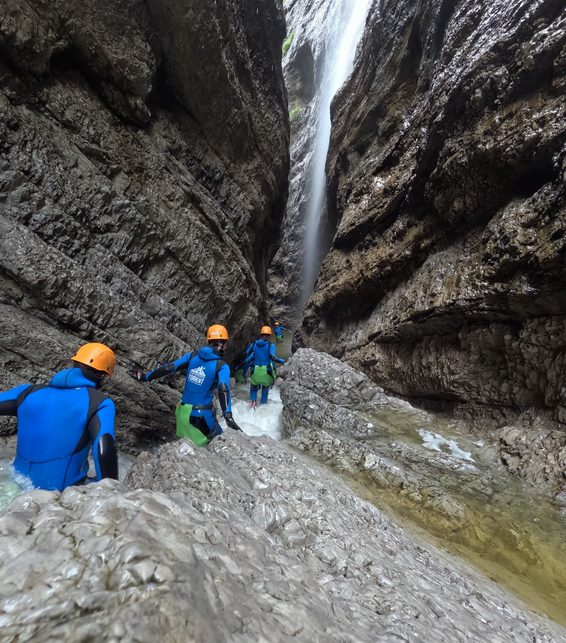
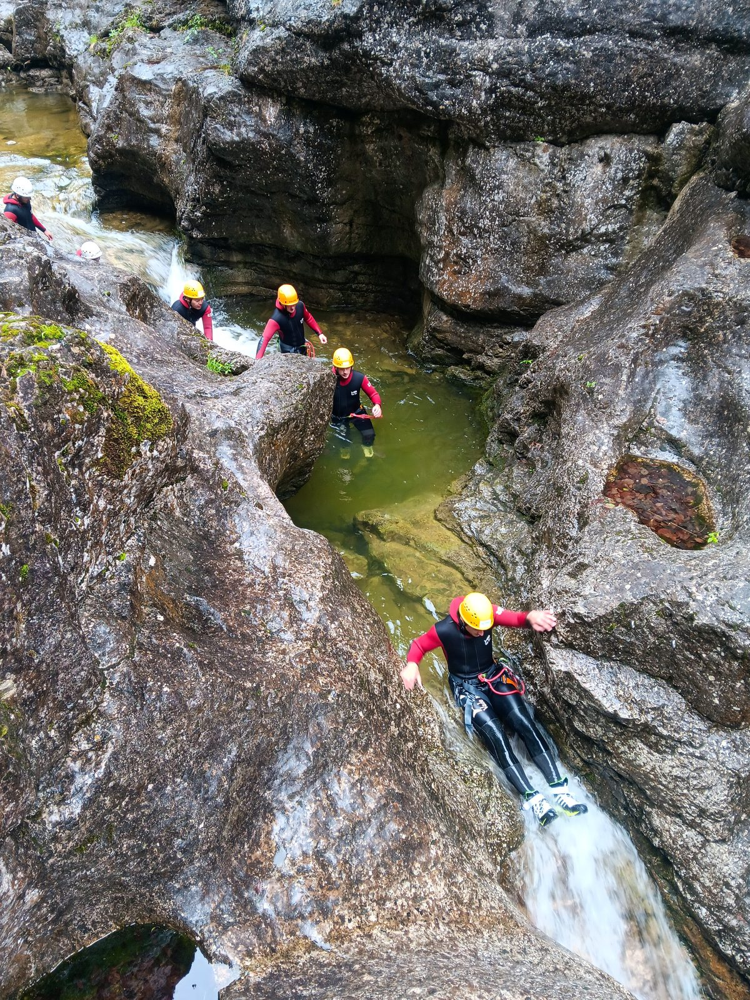
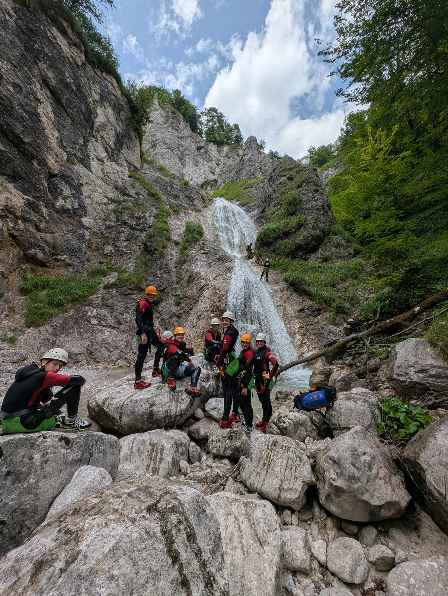
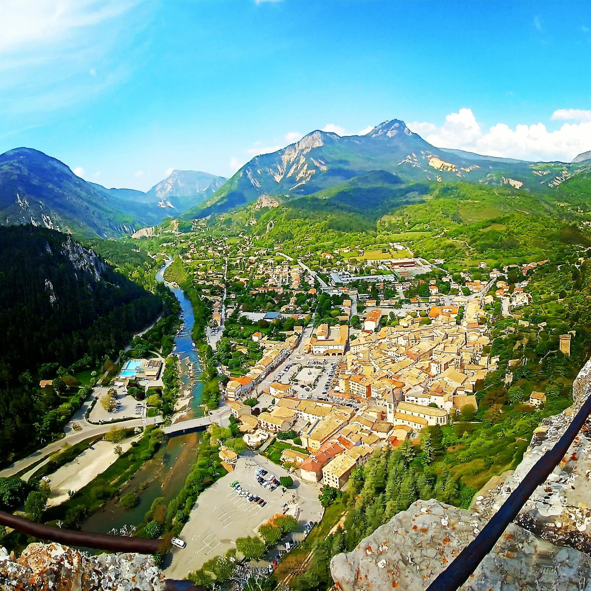

Guides de voyage, sorties canyoning et eaux vives, et récits outdoor de Salzbourg, du sud de la France et des îles Canaries.
Nos réflexions sur le mindset, les habitudes et le développement personnel se trouvent sur notre page Mindset (en allemand) →
 2025-11-01
2025-11-01La Palma — l'« Isla Bonita » — est un joyau vert, sauvage et étonnamment paisible des îles Canaries. Dans ce guide de voyage La Palma 2025 , nous…
Lire la suite → 2025-10-31
2025-10-31Ténérife, c'est bien plus que du soleil, une plage et la mer – l'île offre des décors naturels fascinants, des volcans imposants, des vallées verdoyantes,…
Lire la suite → 2025-10-29
2025-10-29Madère est une île qu'on ne se contente pas de visiter — elle vous touche. Une mer déchaînée contre des falaises sombres, des levadas verdoyantes, des…
Lire la suite →
2025-03-25La Strubklamm est l'une des gorges les plus longues et les plus impressionnantes d'Autriche. Cette sortie offre une expérience nature incomparable, avec…
Lire la suite → 2025-03-24
2025-03-24Imaginez : vous vous tenez au bord d'une gorge profondément encaissée, le grondement de l'eau dans les oreilles, l'air chargé de fraîcheur montagnarde.…
Lire la suite →
2025-03-24L'Almbach compte parmi les plus beaux spots de canyoning du Salzbourgeois et offre un mélange parfait de sensations fortes, d'immersion en pleine nature…
Lire la suite →
2025-03-23Le Fischbach, dans le Bluntautal, offre l'une des sorties canyoning les plus spectaculaires de la région. La combinaison de passages en rappel exigeants,…
Lire la suite → 2025-03-29
2025-03-29Le Verdon, souvent surnommé le « Grand Canyon de l'Europe », se trouve en Provence, dans le sud de la France. Les Gorges du Verdon , avec une profondeur…
Lire la suite → 2025-03-28
2025-03-28Le Couloir Samson, une gorge spectaculaire de Belgique, n'est pas seulement un paradis pour les amateurs d'aventure outdoor, mais aussi un lieu riche en…
Lire la suite → 2025-03-27
2025-03-27La randonnée aquatique est un mélange unique de randonnée, de nage et de sport d'aventure. Vous progressez le long de la rivière et à travers elle,…
Lire la suite → 2025-03-26
2025-03-26Les Gorges du Verdon, dans le sud de la France, sont un véritable paradis pour les amateurs d'activités outdoor. Avec leurs eaux turquoise et leurs…
Lire la suite → 2025-02-25
2025-02-25Les Gorges du Verdon sont l'une des attractions naturelles les plus spectaculaires d'Europe : un mélange de canyons vertigineux, d'eau turquoise et de…
Lire la suite →2025-02-24Les Gorges du Verdon sont l'une des merveilles naturelles les plus spectaculaires d'Europe : un mélange à couper le souffle de canyons profonds, d'eau…
Lire la suite →2025-02-23Bienvenue à Quinson, le village le plus sous-estimé, mais peut-être aussi le plus fascinant, le long du Verdon ! Alors que la plupart des visiteurs filent…
Lire la suite →
2025-02-22Castellane est une véritable pépite le long de la route du Verdon. Ce charmant village de montagne s'étend sur les rives du Verdon et est dominé par…
Lire la suite →2025-02-21La Palud-sur-Verdon est un petit village aussi discret que fascinant, situé à l'entrée des célèbres Gorges du Verdon. Véritable porte d'accès à cette…
Lire la suite →2025-02-20Moustiers-Sainte-Marie est l'un des villages les plus connus le long des Gorges du Verdon et fascine par son architecture historique et sa situation à…
Lire la suite →2025-02-19Les Gorges du Verdon, surnommées le « Grand Canyon de l'Europe », comptent parmi les plus impressionnantes merveilles naturelles du sud de la France. Des…
Lire la suite →2025-02-18Les Gorges du Verdon ne sont pas seulement un chef-d'œuvre géologique, mais aussi un véritable paradis pour les amateurs d'aventures outdoor. Que vous…
Lire la suite →2025-02-01Les Gorges du Verdon, surnommées le « Grand Canyon de l'Europe », comptent parmi les gorges les plus impressionnantes au monde. Avec leurs falaises…
Lire la suite → 2025-03-15
2025-03-15Le Parc national du Mercantour est l'un des plus beaux paradis naturels de France. Si vous êtes en quête de nature sauvage préservée, de sentiers de…
Lire la suite → 2025-03-03
2025-03-03La Côte d'Azur est réputée pour ses stations balnéaires luxueuses, ses plages de rêve et sa mer d'un bleu azur. Mais loin des lieux les plus touristiques,…
Lire la suite → 2025-03-02
2025-03-02La Côte d'Azur n'est pas seulement réputée pour ses plages de rêve et ses villes luxueuses, c'est aussi un paradis pour les cyclistes et les vététistes.…
Lire la suite → 2025-03-01
2025-03-01La Côte d’Azur n’est pas seulement réputée pour ses plages de rêve et ses villes côtières pittoresques, mais aussi pour son large éventail d’activités de…
Lire la suite → 2025-02-28
2025-02-28La Côte d’Azur est mondialement connue pour ses plages de rêve. Des criques cachées aux promenades balnéaires les plus mondaines, ce littoral…
Lire la suite → 2025-02-27
2025-02-27La Côte d’Azur n’est pas seulement réputée pour ses plages de rêve, mais aussi pour ses sentiers de randonnée impressionnants. Ici, la mer azur et un…
Lire la suite → 2025-02-26
2025-02-26La Côte d'Azur n'est pas seulement réputée pour ses plages glamour et ses villes pittoresques, mais aussi pour une incroyable diversité d'aventures…
Lire la suite →